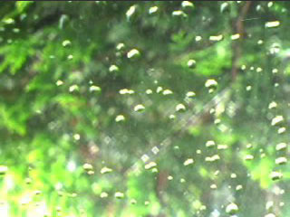
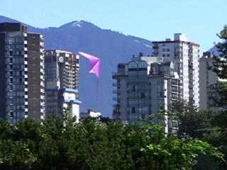

|
Tempography lies somewhere between cinema and photography. A tempograph can be described as a brief visual impact creating an atmosphere; an image of thought; a vision. The pieces are moving images, and consequently cinematic in essence. As the name suggests, the time element is crucial for a tempograph; the artform was born from the idea of extending the photograph - to capture what a non-durative still image cannot capture. That which requires the temporal aspect in this context can be a movement, a change in light etc.
The key to understanding Tempography is: Without the movement or the change in composition, there would be no need for the duration. It is minimalist video art - constrained, observational. A tempograph also identifies a certain way of documenting an individual perspective, a unique metaphor, a point-of-view. It could be seen as an evocative shot from a film and mirrors the narrative of an individual: the author. This particular aspect of the project is further explained in the exhibition section at tempography Click the images to see the short movie clips (around 8 meg) |
|  |
 |
|  |
 |